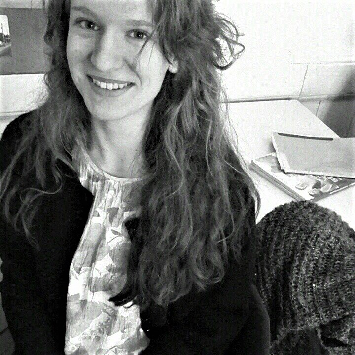

Hello, my name is Ana. Originally a chemical engineering student, I have realized my interest in computer science when interning for Amazon in program management for 6 months. I made this website to serve both as a place to introduce my projects and a way to connect with people with similar interests. If you'd like to collaborate, feel free to contact me!

Hello, my name is Ana. Originally a chemical engineering student, I have realized my interest in computer science when interning for Amazon in program management for 6 months. I made this website to serve both as a place to introduce my projects and a way to connect with people with similar interests. If you'd like to collaborate, feel free to contact me!
HOW TO ADULT APP
The next project I'm looking to do is creating an app which would help young adults launch their independent lives. I'm looking to focus on Slovenian youth first, and start by creating some kind of a checklist (health insurance, doctor checkups, reminders, uni tips, savings calculator ...). I'm happy to collaborate with someone on making the app!
INTRODUCING CS IN HIGH SCHOOLS
Personally, it took me a while to figure out I was interested in studying computer science because I've never been exposed to it before I joined Amazon at 20 years old. I am looking to start an initiative in Slovenian high schools which helps students gain insight into the cs field. This project too is in the brainstorming stage, but I am very excited to be able to give an update soon!
PRODUCT AND PROGRAM MANAGEMENT INTERN
QUIDDITCH VOLUNTEERING
RESEARCH & DEVELOPMENT TECHNOLOGIST